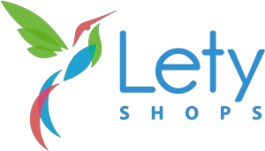
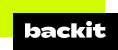
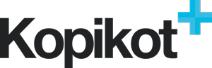
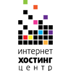
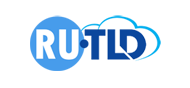
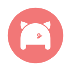

Решил сделать подборку разных интернет служб, которыми пользуюсь или пользовался раньше.
Ссылки реферальные, переходя по ним, вы ничего не теряете, зато поддерживаете меня и мои проекты и получаете + в карму
up: 2021-12-11
 Letyshops – один из самых популярных кэшбэков. У них постоянно проходят какие-то розыгрыши и акции. В дни распродаж могут платить увеличенный кэшбэк, есть программа лояльности, чем больше покупаешь, тем больше кэшбэк.
Минимальная сумма вывода 500р.
 Backit – кэшбэк от самого AliExpress. Раньше назывался epn. Помимо Али, работает со многими другими магазинами.
Минимальная сумма для заказа выплаты на кошельки - 20 центов, на рублевые карты от 9 долларов, на USD карты от 100 долларов, WMZ - 1$, банковские карты Украины - 200$.
 Копикот – уже малость подзабытый кэшбэк сервис. Есть бонус за регистрацию + покупку по рефке. Минимальная сумма вывода 500р.
Интернет Хостинг Центр – вполне годный хостинг. Пользовался им несколько лет, особых проблем не было. Сейчас не пользуюсь, т.к. решено перейти на бесплатный хостинг вне юрисдикции РФ. Есть тестовый период 7 дней и несколько админ панелей для хостигнга.
UptimeRobot - если у вас есть уэб-сайт, хотелось бы знать о проблемах с ним как можно раньше. Единственный сервис, который я могу рекомендовать с чистой совестью это UptimeRobot. У них нет рефералки, зато есть отличный бесплатный план.
WebNames регистратор доменов, за который не стыдно. Если вам нужен домен в зоне .ru,это отличный выбор.
 RU-TLD – это не совсем регистратор, скорее агрегатор, который является партнёром других регистраторов, за счёт чего цены могут быть ниже, чем у тех, чьим партнёром он является.
 porkbun – возможно это самый дешёвый регистратор международных доменов. Безплатная приватность whois, не требует никаких документов. Реферальной программы нету.